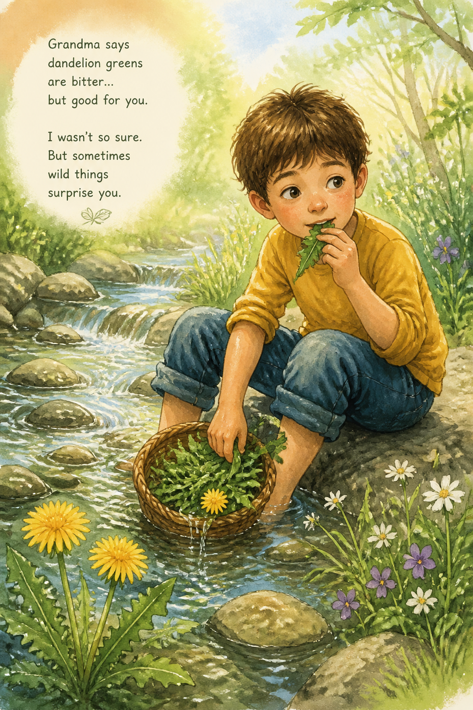

Leo was hungry. He remembered that dandelions are edible — the whole plant. He found some near the stream, washed them, and ate the leaves.
They were bitter, but his stomach stopped growling. "Wild salad," he said, and almost laughed.